Concrete devices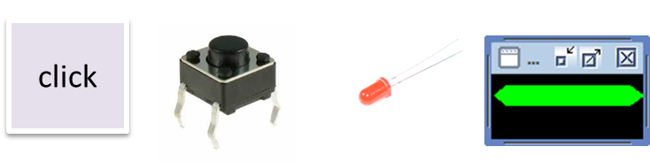 |
Technology dependent layer. See for example: LedMock.java LedAsGui.java ButtonAsGui.java |
0 - Object oriented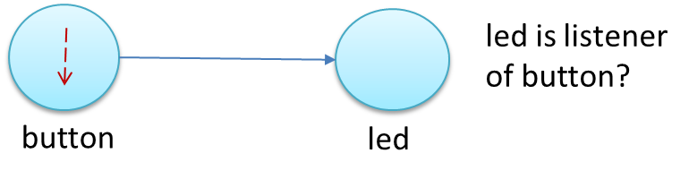 |
The button is an 'active' object and the led is a Analysispros:cons: See also the (horrible) system: |
1 - Actor-based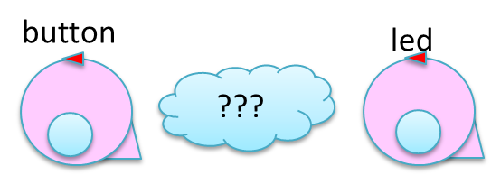 |
The button and the led are (qak) actors able to interact. The problem is to define the At the moment, we can introduce a model for the led: ledalone.qak Analysispros:cons: |
2 - Actor-based: polling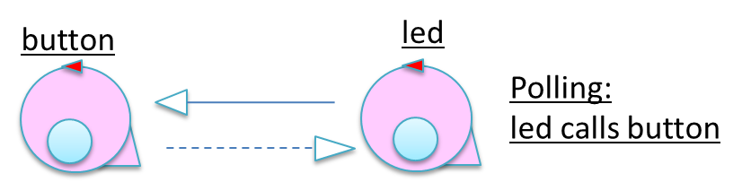 |
The button and the led are (qak) actors able to interact.
The led sends a Analysispros:cons: |
3 - Actor-based: direct call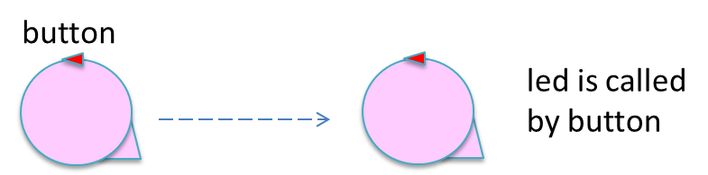 |
The button forwards a Analysispros:cons: |
4 - Actor-based: events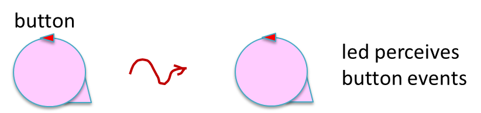 |
The button emits an Analysispros:cons: |
5 - Actor-based: request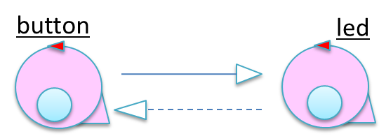 |
Analysispros:cons: |
6 - Introducing another component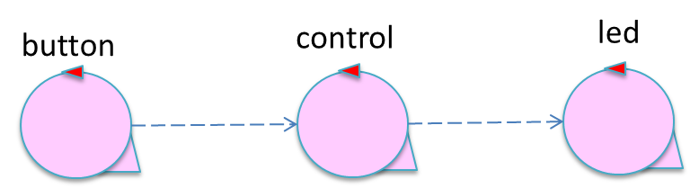 |
The button does not interact with the led, but with another component (control) that embeds the
Analysispros:cons: |
7 - The control as button-observer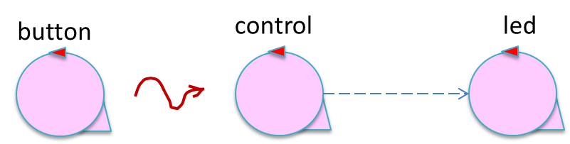 |
The control is an 'observer' of the button sin it is able to Analysispros:cons: |
8 - All event-based observers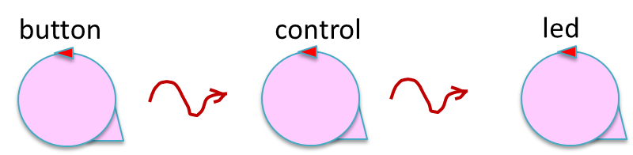 |
Analysispros:cons: |
9 - Embedding the button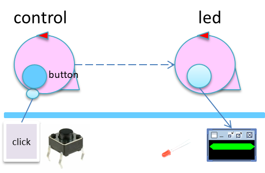 |
The button is just a resource embedded into the control to allow human interaction.
Analysispros:cons: |
10 - The button in a browser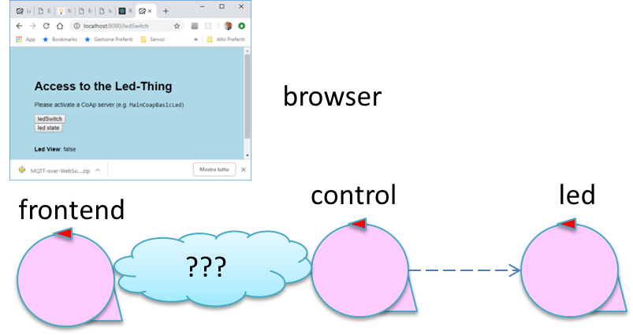 |
Human interaction is based on the usage of a browser provided by a frontend component that
interacts in some way (to be designed) with the control.
Analysispros:cons: |